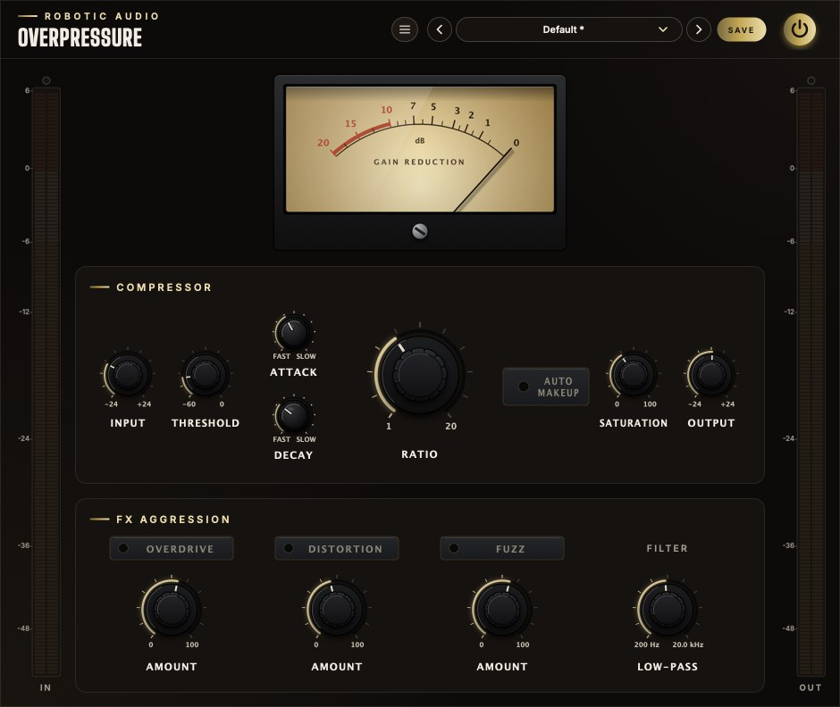

Overpressure
A compressor that goes from gentle glue to outright destruction. Squeeze the dynamics, warm them with saturation, then switch in overdrive, distortion and fuzz, and tame what comes out with a low-pass filter.
- Soft-knee compressor
- Saturation
- 3 drive stages
- Low-pass filter
- 4× oversampled drive
- Gain reduction meter
- 9 factory presets
- AU · VST3 · Standalone

Quick start
From clean control to full aggression.
Load a preset
Use the arrows or the list in the header. Gentle Glue and Vocal Leveler are polite; Drum Smash and Lo-Fi Fuzz are not.
Find the threshold
Turn THRESHOLD down until the needle of the big meter starts to swing left on the loud parts.
Choose how hard
The big RATIO knob in the middle: 2 is gentle, 4 is firm, 20 is a limiter.
Shape the timing
ATTACK decides how much of each hit gets through before the squeeze; DECAY how quickly it lets go.
Add grit
Turn up SATURATION, then light OVERDRIVE, DISTORTION or FUZZ and set each one's amount.
Match the level
Switch on AUTO MAKEUP or use OUTPUT so the OUT meter reads about what the IN meter does. Then compare with the power button.
The window
Laid out the way the sound flows: in on the left, out on the right.
- Header
- The preset bar (previous, next, the list, SAVE), the power button (bypass) and the menu (three lines) with this manual. Click the logo for the version and credits.
- IN meter
- The level going into the compressor, after the Input knob.
- Gain reduction
- The needle rests at 0 on the right and swings left as the compressor works, up to 20 dB.
- Compressor
- Input, Threshold, Attack and Decay to the left of the big Ratio knob; Auto Makeup, Saturation and Output to its right.
- FX Aggression
- Overdrive, Distortion and Fuzz, each with a switch and an Amount knob, and the Low-pass filter.
- OUT meter
- The level leaving the plugin, after everything.
Signal flow
Eleven stages, in this order, top left to bottom right.
The order matters. The compressor comes first, so the drive stages receive a signal whose level has already been evened out: the grit stays consistent instead of coming and going with every loud note. The filter comes after the drive, so it can take the edge off the harmonics the drive creates. The output gain is last, so it never changes how hard anything is driven.
The stages in the dashed frame bend the waveform, which creates new, higher frequencies. They run at four times the sample rate to keep those from folding back as aliasing; see Oversampling.
Input & meters
Set the level going in, and watch three meters.
- Input
- Gain before everything else. Turning it up pushes more of the signal over the threshold and into the drive stages: the "hit it harder" control. −24 … +24 dB
- Output
- Gain after everything else, for matching the level with the bypassed sound. Auto Makeup adds to it. −24 … +24 dB
Both gains glide to a new value over 20 ms, so turning or automating them never produces zipper noise.
Level meters
The IN and OUT meters show peak level per channel on a scale from −60 to +6 dBFS, with more room given to the loud end. Each bar rises instantly and falls at 24 dB per second; a thin line holds the highest peak for 1.5 seconds. The small lamp above a meter lights when the level has gone over 0 dBFS and stays lit until you click the meter.
Gain reduction meter
The needle shows how many decibels the compressor is turning the signal down right now, from 0 (at rest, on the right) to 20 dB. It follows the largest reduction in each moment, so short dips on drum hits are visible.
Compressor
A feed-forward, stereo-linked peak compressor with a soft knee.
Feed-forward means the compressor measures the signal coming in, not its own output, so what you set is what you get: a 4:1 ratio is 4:1. Stereo-linked means one measurement, the louder of the two channels at each instant, sets one gain that is applied to both channels. A loud sound on the left therefore turns the right down by the same amount, and the stereo image stays where it was.
- Threshold
- The level above which the compressor starts turning the signal down. Lower it for more compression. It is measured after the Input knob. −60 … 0 dB
- Ratio
- How firmly levels above the threshold are held back. At 4:1 a signal that goes 4 dB over the threshold comes out only 1 dB over. 1:1 does nothing; 20:1 is, in practice, a limiter. The knob gives the low ratios the most travel. 1:1 … 20:1
- Attack
- How quickly the gain is pulled down when the level rises. Fast catches the front of each hit; slow lets the transient punch through before the squeeze. 0.1 … 100 ms
- Decay
- How quickly the gain recovers when the level falls: the release. Fast is loud and can pump; slow is smooth and holds the level down between hits. 10 … 1000 ms
The soft knee
The curves show the level coming out for each level going in, with the threshold at −30 dB. The dashed diagonal is "no compression".
Instead of a sharp corner at the threshold, the ratio is brought in gradually over a 6 dB knee: compression begins gently 3 dB below the threshold and reaches the full ratio 3 dB above it. Signals that hover around the threshold are eased into compression rather than switched in and out of it, which is why Overpressure can sit on a vocal or a mix bus without drawing attention to itself.
Below the knee the signal is left exactly as it is.
How attack and decay work
At every sample the gain computer says how many decibels of reduction the current level calls for. The compressor does not jump there: it moves the actual reduction towards that target a fixed fraction of the way each sample. When more reduction is called for it uses the Attack time, and when less is called for it uses the Decay time. Each time is how long it takes to cover about two thirds (63 %) of the distance; after three times as long it has all but arrived.
The smoothing happens in decibels, so a release sounds the same whether the compressor was working by 3 dB or by 20 dB: a steady rise, not a rush at the end.
Auto makeup
Gives back the level the compressor takes away.
Compression turns the loud parts down, so the result is quieter. AUTO MAKEUP adds gain at the output to compensate, worked out from the threshold and ratio alone:
makeup = ½ × (−threshold) × (1 − 1 / ratio)
That is half of the reduction a full-scale signal would receive. Half, because real music spends most of its time well below full scale, and giving back the whole amount would make everything too loud.
| Threshold | Ratio | Makeup |
|---|---|---|
| −18 dB | 4:1 | +6.8 dB |
| −20 dB | 2:1 | +5.0 dB |
| −32 dB | 10:1 | +14.4 dB |
| −6 dB | 20:1 | +2.9 dB |
The makeup follows the two knobs, not the music: it does not ride the level or react to what is playing, so it never pumps. It is added to the Output knob, which stays free for the final trim, and it glides when you move Threshold or Ratio.
Saturation
A soft ceiling that rounds the peaks.
SATURATION sits right after the compressor and is always in the path; at 0 % it does nothing. Turning it up blends in a smoothly curved limiter (a hyperbolic tangent): quiet signals pass exactly as they are, and the louder a peak is, the more it is rounded off and held under a ceiling.
Output against input, from −1 to +1 (full scale). The dashed diagonal is a clean signal.
Near the centre every curve follows the diagonal: low levels are untouched. Towards the edges the curves flatten. At 100 % nothing gets past about a quarter of full scale (−12 dBFS), however hard it is driven: Saturation at full is a soft limiter in its own right.
The rounding adds odd harmonics, which the ear hears as warmth and density rather than as distortion. The knob runs from 0 to 100 %.
Because Saturation lowers peaks, the signal gets quieter as you turn it up on loud material. Bring the level back with Output, or drive it harder with Input.
FX Aggression
Three kinds of drive, mild to wild, each with a switch and an amount.
The stages run in a fixed order, Overdrive → Distortion → Fuzz, and each one only when its switch is lit. Use one, or stack them: each stage then distorts the output of the one before it. Switching a stage on or off crossfades it over 20 ms, so you can do it while the music plays.
Every AMOUNT knob sets how hard its stage is driven: how much the signal is amplified before it hits the clipping curve. Each stage then turns its own output back down by part of that gain, so more Amount means more grit and only somewhat more volume.
Overdrive
Distortion
Fuzz
Each stage's output against its input, from −1 to +1, at three Amount settings. The steeper the middle and the flatter the ends, the more the waveform is squared off.
- Overdrive
- A warm soft clip, like a valve stage pushed past its comfort zone. The curve is smooth (a hyperbolic tangent) and slightly lopsided: the positive and negative halves of the wave are rounded a little differently, which adds even harmonics as well as odd ones and gives the tone its body. Up to 30 dB of drive. 0 … 100 %
- Distortion
- A harder, symmetrical clip. The curve bends more abruptly (a cubic) and then stops dead: tighter and more aggressive than Overdrive, with a strong odd-harmonic bite. Up to 36 dB of drive. 0 … 100 %
- Fuzz
- A hard clip with a deliberately off-centre operating point. The signal is pushed sideways before it is cut off flat, and the two halves are cut at different heights, so the result is a ragged, lopsided square wave: splatty, buzzy and thick with harmonics. More Amount also pushes it further off-centre. Up to 48 dB of drive. 0 … 100 %
Filter
A low-pass after the drive, to choose how bright the result is.
- Low-pass
- Removes what lies above its frequency, with a slope of 12 dB per octave and no resonance peak (a flat, Butterworth response). Fully clockwise, at 20 kHz, it is out of the way. The knob gives the low frequencies the most travel. 200 Hz … 20 kHz
Drive creates harmonics all the way up the spectrum, and fuzz in particular can turn fizzy. Turning the filter down to between 3 and 8 kHz behaves much like a guitar speaker: the body of the distortion stays and the fizz goes. On clean settings, a cutoff around 12–14 kHz takes a little air off for a tape-like softness.
The cutoff glides to a new value over 50 ms, so sweeping or automating it is smooth. It works at the normal sample rate and never goes above 45 % of it.
DC blocker
Just before the filter, a gentle high-pass at 10 Hz removes any constant offset. Overdrive and Fuzz are lopsided on purpose, and lopsided clipping shifts the whole waveform away from the centre line. That shift is inaudible but would waste headroom and upset the next plugin; the blocker takes it out without touching anything you can hear.
Oversampling
Why the drive sounds like drive and not like digital hash.
Bending a waveform creates harmonics above the original sound. In a digital system, harmonics that land above half the sample rate cannot exist; they fold back down to frequencies that have nothing to do with the music. That is aliasing, the harsh, metallic edge of cheap digital distortion.
Overpressure runs Saturation and the three drive stages at four times the sample rate (176.4 kHz in a 44.1 kHz session). The harmonics now have room to exist, and the filters that bring the signal back down to the normal rate remove them cleanly before they can fold.
- Latency
- The up- and downsampling filters delay the sound by a few samples. Overpressure reports this to your host, which lines the track up with the others automatically.
- Bypass
- The power button crossfades to the dry sound, delayed by the same few samples, so switching it never clicks and never shifts the timing.
Presets
Nine starting points, and room for your own.
| Preset | What it does | Key settings |
|---|---|---|
| Default | A firm, clean compressor. | −18 dB, 4:1, 10 / 150 ms |
| Gentle Glue | Holds a mix or a bus together without being heard. | −20 dB, 2:1, 30 / 250 ms, saturation 10 % |
| Vocal Leveler | Evens out a voice, word by word. | −24 dB, 3.5:1, 8 / 120 ms, saturation 15 % |
| Drum Smash | Crushed, pumping room sound. | −32 dB, 10:1, 1 / 60 ms, saturation 40 %, overdrive 35 % |
| Brickwall Limiter | Stops peaks dead. | −6 dB, 20:1, 0.1 / 50 ms |
| Tape Warmth | Soft peaks and a darker top. | −14 dB, 2:1, saturation 60 %, low-pass 14 kHz |
| Bass Grit | Growl on top, weight underneath. | −20 dB, 4:1, overdrive 50 %, low-pass 6 kHz |
| Guitar Crunch | Amp-like bite. | −22 dB, 3:1, distortion 55 %, low-pass 7 kHz |
| Lo-Fi Fuzz | Broken, buzzing and dark. | −18 dB, 3:1, fuzz 60 %, low-pass 3.5 kHz |
Press SAVE in the header to keep your own. Your presets join the list; the preset menu has Save As, Delete and Open Folder, which shows where they are kept as files you can back up or share. An asterisk after the preset's name means you have changed something since loading it.
Every knob and switch is a host parameter and can be automated.
Recipes
Settings to start from; then use your ears.
Ratio 4:1, Attack 30 ms, Decay 100 ms. Lower the Threshold until the needle swings 4–6 dB. The slow attack lets each hit crack through.
On a send: Threshold −35 dB, Ratio 10:1, Attack 1 ms, Decay 60 ms, Saturation 40 %, Overdrive 35 %. Blend the send under the dry drums.
Ratio 3:1, Attack 8 ms, Decay 120 ms, Threshold for 3–5 dB of reduction, Auto Makeup on, Saturation 10–15 %.
Ratio 4:1, Overdrive on at 50 %, Low-pass 6 kHz. The harmonics make the bass audible on small speakers.
Threshold −30 dB, Ratio 8:1 for an even level, Fuzz on at 70 %, Distortion on at 30 % in front of it, Low-pass 4 kHz, Output −6 dB.
Ratio 1:1 switches the compressor off in effect. Use Saturation and the drive stages alone, with Input as the drive control.
Specifications
The numbers.
| Property | Value |
|---|---|
| Compressor | Feed-forward, stereo-linked, peak-detecting, 6 dB soft knee |
| Threshold · Ratio | −60 … 0 dB · 1:1 … 20:1 |
| Attack · Decay | 0.1 … 100 ms · 10 … 1000 ms |
| Input · Output | −24 … +24 dB each |
| Drive | Saturation, Overdrive (30 dB), Distortion (36 dB), Fuzz (48 dB), at 4× oversampling |
| Low-pass | 12 dB/octave, 200 Hz … 20 kHz |
| DC blocker | 6 dB/octave high-pass at 10 Hz |
| Meters | Peak in and out, −60 … +6 dBFS with clip lamps; gain reduction 0 … 20 dB |
| Latency | A few samples, reported to the host |
| CPU | Rests (costs next to nothing) while silence comes in, once the drive and the filter have rung out |
| Channels | Stereo (mono tracks work too) |
| Formats | AU, VST3, Standalone |